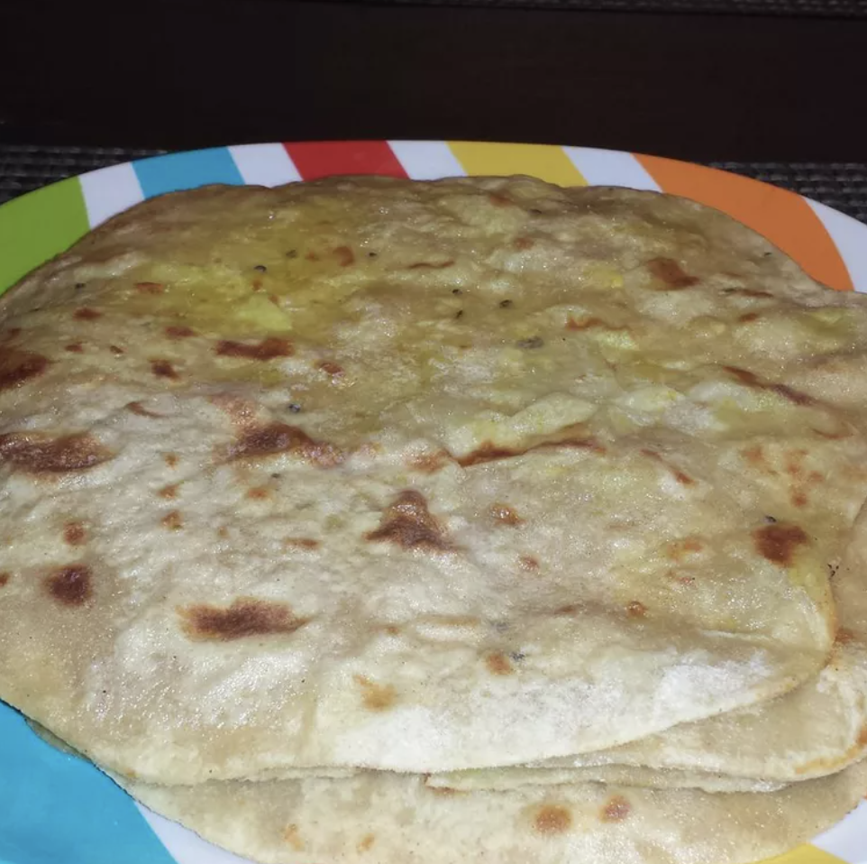

Alooparatha

This is aloo paratha. An indian breakfast dish, mostly prefereed with curd.
It is made from wheat flour and mashed potatoes. It is a very popular breakfast dish in India.
It is very easy to make and very delicious to eat
Ingrediants
- Wheatflour
- Potatoes
- Spices
- Oil
Steps
- Take wheat flour and mashed potatoes in a bowl and mix them well
- Make small balls from the mixture
- Roll the balls into a flat round shape
- Heat a pan and cook the flat round shape till it turns golden brown
Back to Home